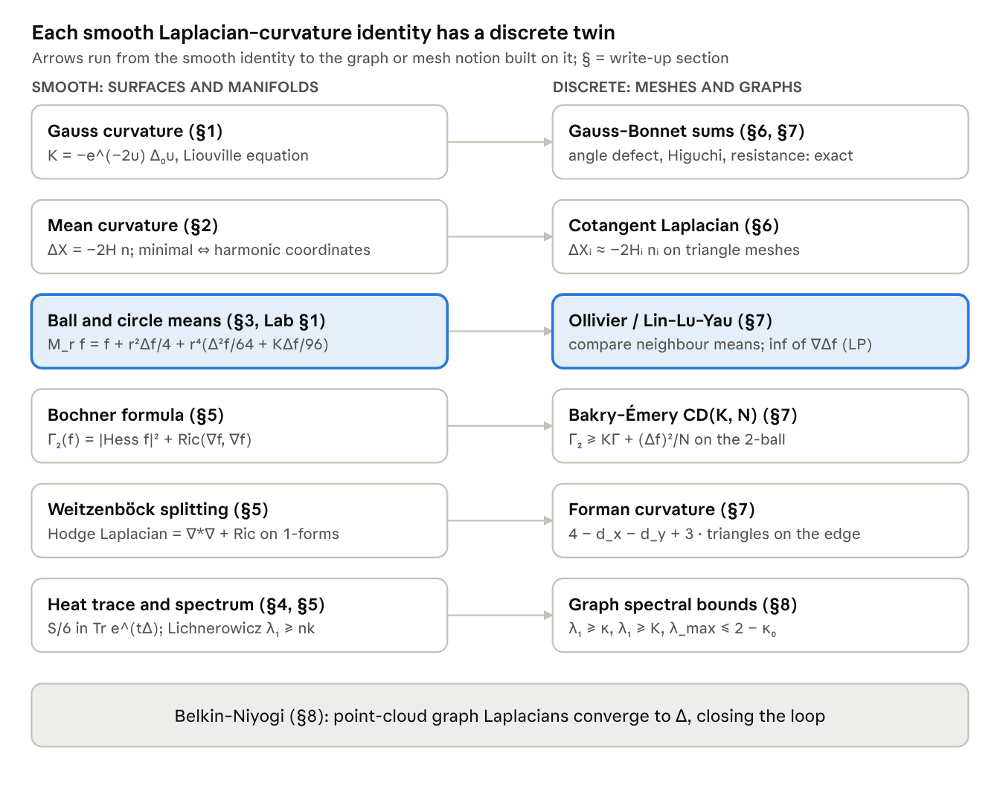

23 November 2026 · Computational Classnotes · Laplacian Lab
Curvature is what the Laplacian sees beyond its flat value. On smooth
surfaces and manifolds, on triangle meshes and on graphs, every standard
notion of curvature can be read off the Laplacian, its mean values, its
heat flow, its Bochner identity or its spectrum. This write-up lists
those instances. Each one has a matching section and check in the
companion notebook notebooks/LaplacianCurvature.nb, and
every check below was run on a Wolfram kernel. The notebook also draws
each instance: surfaces coloured by K and H, error plots for the curved
mean value, heat traces of two same-area drums, a torus mesh, and seven
example graphs coloured by each graph curvature.

Fig. 1. Each smooth Laplacian–curvature identity has a discrete twin. The highlighted row is the thread from Laplacian Programmable Lab, Section 1 (Mean-value origin): the mean-value origin of Δ is also where curvature first appears, both on manifolds and on graphs.
In isothermal coordinates, Gauss curvature is the flat Laplacian of the log conformal factor, rescaled. For g = e^(2u)(dx² + dy²):
The same identity gives the 2-D Ricci flow ∂u/∂t = e^(−2u)Δ₀u = −K, a nonlinear heat equation, and in dimension n it generalises to the Yamabe equation for prescribed scalar curvature.
Checked (notebook §2): stereographic sphere K = 1, Poincaré half-plane and disc K = −1, and agreement with the Riemann-tensor computation for an arbitrary u(x, y).
Applied to the position vector of an immersed surface, the Laplace–Beltrami operator returns the mean-curvature vector:
So a surface is minimal exactly when its coordinate functions are harmonic (Takahashi), and mean-curvature flow ∂X/∂t = ΔX is the heat equation for the embedding. The tangential part of ΔX is identically zero.
Checked (notebook §3): sphere of radius 3 gives H = 1/3; torus (R = 2, r = 1) gives H = 2cos²(v/2)/(2 + cos v); catenoid gives H = 0.
Laplacian Programmable Lab, Section 1: Mean-value origin obtains Δ from the flat sphere mean, f = f + r²Δf/(2n) + …. On a curved space the same expansion carries curvature from order r⁴ on (Gray–Willmore 1982). On a surface of constant curvature K the geodesic-circle mean is:
The coefficients come from the series of (cos r), the eigenvalue of the circle-mean operator on spherical harmonics, rewritten in λ = −l(l+1). Volumes carry curvature at order r²:
Here S is the scalar curvature. Ollivier’s curvature (Section 7) is the same idea applied to two nearby balls: on a manifold, comparing averages over balls of radius ε at points a distance δ apart along v gives κ ≈ ε² Ric(v, v)/(2(n+2)).
Checked (notebook §4): the Legendre coefficients 1/64, 1/96, 1/2304, 1/1152 and 1/1440 are exact. A direct average of the non-symmetric function eˣ(1+z)² + yz³ over geodesic circles on S² matches the formula through r⁶ with zero remainder. The disc-area series and the S³ ball-volume coefficient −1/5 = −6/(6·5) also match.
The trace of the heat semigroup encodes curvature in its short-time expansion (Minakshisundaram–Pleijel; McKean–Singer 1967):
The local coefficient is S(x)/6. For a surface, ∫S = 2∫K = 4πχ, so the eigenvalues determine the Euler characteristic. Weyl’s law is the leading term.
Checked (notebook §5): on the unit S² (eigenvalues l(l+1), multiplicity 2l+1), t·Tr e^(tΔ) = 1.003340 at t = 0.01, against 1 + t/3 + t²/15 = 1.003340.
Bochner’s identity ties the Laplacian of the energy density to Ricci curvature:
In Bakry–Émery’s Γ-calculus, built on the carré du champ Γ(f) = ½(Δ(f²) − 2fΔf) = |∇f|² and its iterate Γ₂(f) = ½ΔΓ(f) − Γ(f, Δf) (both defined from Δ alone; see the Bakry–Émery write-up, §2), it reads Γ₂(f) = |Hess f|² + Ric(∇f, ∇f), and the bound Ric ≥ K becomes Γ₂ ≥ KΓ + (Δf)²/n. This is the form graphs copy (Section 7). Consequences:
Checked (notebook §6): Bochner holds symbolically for an arbitrary f(θ, φ) on S². λ₁(S²) = 2 = nk, the equality case. Δr = cot r ≤ 1/r on (0, π).
On a triangle mesh the cotangent Laplacian, divided by the vertex area, discretises Δ (Pinkall–Polthier; Meyer–Desbrun–Schröder–Barr):
The angle defect sums to exactly 2πχ, a discrete Gauss–Bonnet theorem. No discrete Laplacian keeps every smooth property at once: symmetry, locality, linear precision, semidefiniteness and the maximum principle (Wardetzky et al. 2007). The smooth analogue of this tension is the orthonormal mandate of the Laplacian notebook (Theorem 7.4): an average over stencil points hu, hv in the plane gives h²∇ᵀ(uuᵀ + vvᵀ)∇f, which is h²Δf only when the axes are orthonormal; skewed axes add a cross term 2M₁₂ ∂ₓ∂ᵧf. A mesh has no orthonormal axes, and the cotangent weights are what correct for that. See Laplacian Programmable Lab, Section 5: Stencils and the orthonormal mandate.
Checked (notebook §7), 400-vertex sphere mesh: Σ defect/2π = 2.000000, mean K = 1.014, mean H = 1.006.
Every graph curvature in use copies one smooth relationship from Sections 1–5, and each is computed from Δ, its random walk, or its pseudoinverse.
| Curvature | Smooth relationship it copies | Defined on | Built from the Laplacian via |
|---|---|---|---|
| Ollivier (2009) | Ball means at nearby points (§3) | edges, pairs | W₁ distance between random-walk measures = averaging kernel of Δ |
| Lin–Lu–Yau (2011) | same, infinitesimal laziness | edges | κ = inf { ∇_xy Δf : f 1-Lipschitz, ∇_yx f = 1 } (Münch–Wojciechowski 2019) |
| Bakry–Émery CD(K,N) (Lin–Yau 2010) | Bochner, Γ₂ ≥ KΓ + (Δf)²/N (§5) | vertices | Γ, Γ₂ computed from Δ on the 2-ball |
| CDE / CDE′ (Bauer et al. 2015) | Bochner + chain rule, for Li–Yau | vertices | modified Γ₂ with Δ√f |
| Forman (2003) | Weitzenböck: Hodge = rough + curvature (§5) | edges, cells | diagonal of the 1-form Hodge Laplacian; 4 − − + 3·#triangles |
| Entropic (Erbar–Maas 2012) | Ricci ⇔ entropy convexity (Lott–Sturm–Villani) | whole chain | heat flow e^(tΔ) as a gradient flow of entropy |
| Resistance (Devriendt–Lambiotte 2022) | Gauss–Bonnet (§6) | vertices, edges | effective resistance from L⁺; = 1 − ½ |
| Steinerberger (2023) | Bonnet–Myers / mean distance | vertices | D·K = n·1 with D the distance matrix |
| Combinatorial (Higuchi 2001) | Gauss–Bonnet on polyhedra | vertices | 1 − d/2 + Σ 1/face size; total = χ |
Two results make the link to Section 3 explicit. Ollivier curvature compares averages over two neighbouring balls, as the smooth expansion does. Münch–Wojciechowski turn it into an optimisation of ∇Δf, so curvature is literally the gradient of the Laplacian of a test function. Foster’s theorem ω = n − 1 makes Σ = 1 on every connected graph.
Graph curvature lower bounds give Lichnerowicz-type bounds on the normalised Laplacian, as in Section 5:
The link runs the other way too. On points sampled from a manifold, the heat-kernel graph Laplacian (weighted mean − value)/t converges to Δ and its eigenvectors converge to eigenfunctions (Belkin–Niyogi). So the graph-side quantities above are discretisations of Sections 1–5, not only analogies.
Checked (notebook §9): all three spectral inequalities hold on the five test graphs (Section 9 table). For 20 000 points on S² and f = z, the point-cloud Laplacian recovers Δz = −2z with fitted ratio 0.9997 and correlation 0.99999.
Computed in the notebook; all curvatures are minima over edges or vertices, and λ are eigenvalues of the normalised Laplacian. Lin–Lu–Yau was computed two ways (Münch–Wojciechowski linear program and 2 by optimal transport) and they agree on every graph.
| Graph | κ₀ (Ollivier) | (CD(K,∞)) | Forman / augmented | min resistance p | λ₁ | ||
|---|---|---|---|---|---|---|---|
| Complete K₅ | 5/4 | 3/4 | 7/8 | −4 / 5 | 0.200 | 1.250 | 1.250 |
| Cube Q₃ | 2/3 | 0 | 2/3 | −2 / −2 | 0.125 | 0.667 | 2.000 |
| Petersen | 0 | −1/3 | −1/3 | −2 / −2 | 0.100 | 0.667 | 1.667 |
| Cycle C₆ | 0 | 0 | 0 | 0 / 0 | 0.167 | 0.500 | 2.000 |
| Grid 4×4 | 0 | 0 | 0.088 | −4 / −4 | −0.112 | 0.218 | 2.000 |
Other totals: Σ resistance curvature = 1.000 on all five graphs. Higuchi curvature sums to 2 on the tetrahedron, cube, dodecahedron, icosahedron and truncated icosahedron. K₅ attains λ₁ = = 5/4 and Q₃ attains λ₁ = = = 2/3, the discrete equality cases.
Five more places where curvature is a Laplacian, each computed in notebook §10.
Checked (notebook §10): Weitzenböck on S² gives difference {0, 0} for arbitrary f and h. The sphere’s Ricci-flow and mean-curvature-flow solutions give residual 0. On a bumpy flat torus, max|K| falls from 4.83 at t = 0 to 0.059 at t = 2 while ∬K dA stays 0. Curve shortening of a 160-vertex polygon gives fitted dA/dt = −6.32 against −2π = −6.28. Ollivier curvature gives κ/ε² = 0.12496 (sphere), 0 (plane) and −0.12504 (hyperbolic plane) at ε = 0.05. The Yamabe factor u = (2/(1 + r²))^(1/2) gives S̃ = 6, the round S³.
Smooth
Discrete surfaces
Graphs
© 2026 Computational Classnotes · CC BY-NC-SA 4.0